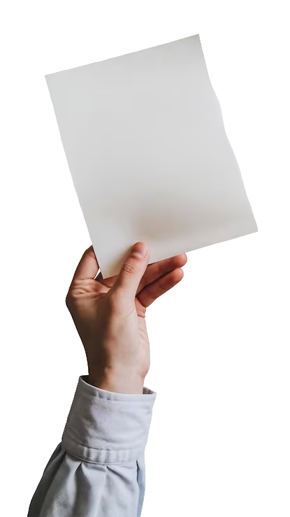
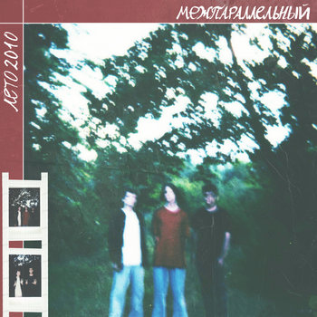

начать игру
старт
0 / 4
режь — веди через лист, параллельно. четыре раза.

ты можешь остановиться
или разрезать иначе
один раз. поперёк.
ПОРЕЗАТЬ
НЕ РЕЗАТЬ

межпараллельный
нет имени
СЛУШАТЬ
исполнитель — band.link/mejparallel